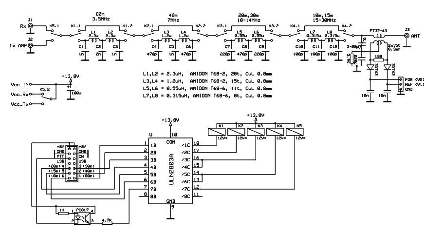

Набор для самостоятельного изготовления 45 W SSB линейного усилителя мощности.

В поисках усилителя
мощности для QRP трансивера мне, как всегда, помогли наши
китайские друзья:)
На сайте Aliexpress можно приобрести
набор для самостоятельного изготовления 45 W SSB линейного
усилителя мощности.
Усилитель работает в диапазоне от 3 до 30 МГц, при входной мощности от
1 до 5 мВт (регулируемая) и напряжении питания 12 В максимальная
выходная мощность ( в зависимости от частоты) составляет 57 Вт.
Можно получить и больше,
но у транзисторов IRF очень мала охлаждающая поверхность, и при
длительной интенсивной работе они могут выйти из строя.
В данный нобор входят все радиодетали, ферритовые сердечники, печатная
плата усилителя
мощности и в качестве бонуса - печатная плата для изготовления
КСВ-метра на микросхеме LM3914.
Радиодетали для сборки КСВ-метра в комплект не входят, их нужно
приобретать самостоятельно.
Самому необходимо приобрести и радиатор, он в комплект не входит, о чём
предупреждается на страничке продавца.

Схема усилителя мощности заимствована, с незначительной
переделкой, у
американского автора Э.Коссора (WA2EBY).
Неоднократно выполненный – он показал весьма приличные, не
смотря на его простоту, результаты.
Для намотки трансформаторов T1 и T2 используется медный провод
диаметром 0.3 мм и 0.4 мм соответственно, а для трансформатора T3 и
дросселя L1 - провод
диаметром 0.8 мм. В моём наборе на ферритовых кольцах были сняты фаски,
поэтому дополнительно обматывать их фторопластовой лентой нет смысла.
Для пайки радиодеталей я использовал 12-ти вольтовый 25 Вт паяльник с
заточенным жалом и спирто-канифольный флюс.
Так-же необходима оптическая линза, желательно с подсветкой.
Резисторы R3 и R19 следует паять только после того, как транзисторы Q1
и Q4 будут закреплены на радиаторе, а их выводы припаяны. Напряжение на
эмиттере транзистора Q3 по отношению к земле (то есть на R16) должно
быть от 0,3 В до 0,6 В. Если ваши измерения попадают в этот диапазон,
дальнейшая настройка не требуется.
Если напряжение на резисторе R17 транзистора драйвера 2SC1971
составляет
около 0,8 В, то дальнейшая регулировка не требуется.
Поверните потенциометр RV1 полностью против часовой стрелки, а RV2
следует повернуть до предела по часовой стрелке. Таким образом, на
затворах транзисторов Q1 и Q4 напряжение смещения будет равно 0.
Подключите амперметр вместо дросселя L1 (убедитесь, что измеритель
установлен в положение диапазона 10 А). Отрегулируйте потенциометр RV2
медленно против часовой стрелки, пока измеренный ток не станет равным
30 mA.
Медленно регулируйте RV1 по часовой стрелке, пока измеренный ток не
будет равен 60 mA.

Фильтр нижних частот выполнен на кольцах типа Т68-2 и
Т68-6, схема приведена выше
Документация по сборке усилителя мощности.
Усилитель мощности 45W из Китая KIT DIY (видео).
Power Amplifier 45W из Китая настройка и тестирование (видео).
Владимир, EW7AS
Главная | О своём городе | Антенны | Радиосвязь на КВ | Радиосвязь на УКВ |Форум
Copyright © 2014 Сайт радиолюбителей г. Климовичи | Design studio «Zurbagan»